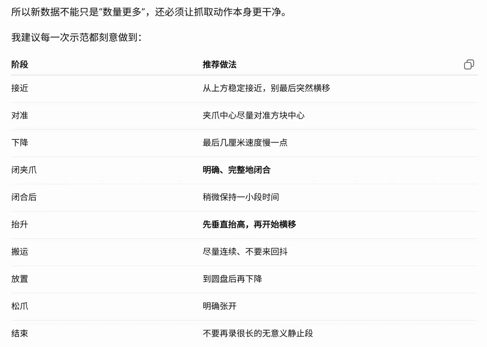
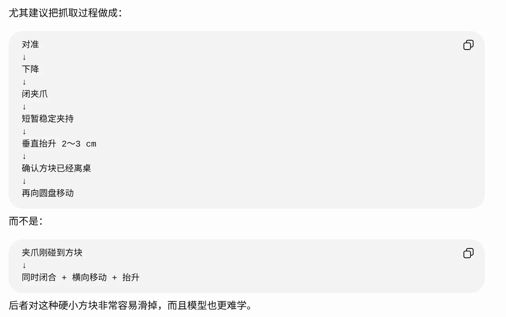

Alicia-M_SmolVLA
复现全流程操作手册
从数据采集、转换清洗、服务器训练到本机推理与迭代
关键词 | 内容 |
|---|---|
任务对象 | 2.5 cm 彩色小方块抓取并放置到圆盘 |
机器人 | 玄雅 Alicia-M，6 关节 + 1 夹爪，单臂 7 维状态/动作 |
视觉输入 | 外部固定相机 cam_right + 腕部相机 cam_wrist，两路 640×480 / 30 FPS RGB |
模型 | SmolVLA，基于 SmolVLM2-500M-Video-Instruct 的 VLA 策略微调 |
训练服务器 | Ubuntu 容器，RTX 4090，LeRobot 0.6.0 / smolvla 环境 |
推理电脑 | ThinkBook 16 G7 IAH，Ubuntu 24.04，RTX 5060，smolvla_infer 环境 |
文档说明与目录
本手册将 SmolVLA 复现过程拆成“概念—本地采集—数据转换—服务器训练—模型下载—真机推理—评估迭代”七条主线。每一阶段都给出输入、命令、输出和合格标准，便于初学者按 2.5 cm 方块、20K 训练和 checkpoint/020000 的单一路线完成首次复现。
章节 | 内容 |
|---|---|
1 | 项目目标与完整流程 |
2 | 基础概念：SmolVLA、VLA、动作块与闭环推理 |
3 | 设备、环境与路径约定 |
4 | 本地相机检测、采集前准备与 SmolVLA 代码实战 |
5 | 官方平台采集与数据集转换 |
6 | 14 维到 7 维数据清洗与质量检查 |
7 | 上传服务器与训练环境确认 |
8 | SmolVLA 训练、日志和 checkpoint 管理 |
9 | 模型下载与本机推理 |
10 | 动作顺滑、速度和夹爪参数调节 |
11 | 失败分析、补采策略与数据迭代 |
12 | 常见问题与故障排查 |
附录 | 完整命令速查 |
1. 项目目标与完整流程
本项目目标是在 Alicia-M 机械臂上复现 SmolVLA：使用双相机图像、机械臂当前状态和语言任务文本作为输入，让模型输出 7 维关节与夹爪动作，从而完成 2.5 cm 彩色小方块抓取并放置到圆盘的任务。
阶段 | 输入 | 主要操作 | 输出/合格标准 |
|---|---|---|---|
1. 设备检测 | 外部相机、腕部相机、机械臂 | 检测 /dev/video*、相机画面、GPU 与环境 | 确认 CAM_RIGHT / CAM_WRIST； Camera OK |
2. 数据采集 | 人类示范、官方采集平台 | 采集 150 组或更多 episodes； 每条完整抓取 | LeRobot 转换产物或 平台转换产物 |
3. 数据清洗 | CONVERT-v1 数据集 | 检查 state/action 维度； 14→7 裁剪有效侧 | SMOLVLA 7 维数据集 |
4. 上传服务器 | 本地 SMOLVLA 数据集 | rsync 上传到 /workspace/smolvla/data | 服务器可读取 parquet 与 videos |
5. 模型训练 | 数据集 + smolvla_base_alicia_2cam | 完成 20K 离线监督训练 | checkpoint/020000/pretrained_model |
6. 下载推理 | pretrained_model | rsync 下载到 本机 models 目录 | 本机 config 检查通过 |
7. 实机评估 | 实时双相机与机器人状态 | smolvla_fast_live.py 闭环推理 | 记录成功率和失败阶段 |
2. 基础概念：SmolVLA、VLA、动作块与闭环推理
2.1 SmolVLA 在本项目中的定位
SmolVLA 是一种视觉-语言-动作策略。它读取当前两路 RGB 图像、机器人 7 维状态和“抓取 2.5 cm 方块”的任务文本，然后预测未来一段 7 维动作序列。它不是传统轨迹播放器，也不是单步 PID 控制器，而是从示范数据中学习“当前观测下专家接下来会怎么动”。
符号/字段 | 本项目含义 |
|---|---|
observation.images.camera1 | 外部固定相机，由 cam_right rename 得到 |
observation.images.camera2 | 腕部相机，由 cam_wrist rename 得到 |
observation.state | Alicia-M 当前 6 关节 + 1 夹爪，共 7 维 |
task | 语言任务文本，语义为抓取 2.5 cm 方块 |
action | 模型预测的 6 关节目标 + 夹爪目标，共 7 维 |
2.2 动作块与 REPLAN_EVERY
本项目 20K checkpoint 通常包含 chunk_size=50、n_action_steps=50。推理脚本中 REPLAN_EVERY=0 并不是不重规划，而是表示每次执行完整 50 个动作后再重新观察和推理。REPLAN_EVERY=8 则会只执行动作块前 8 步，丢弃后 42 步，容易造成频繁推理停顿或永远执行不到抓取动作块后半段。
参数 | 实际行为 | 适用场景 |
|---|---|---|
REPLAN_EVERY=0 | 执行 20K checkpoint 的完整 n_action_steps，本项目为 50 步 | 动作更连续，作为本手册默认推理设置 |
REPLAN_EVERY=8 | 每 8 步重新推理，后续动作被丢弃 | 需要高频纠偏时试验，但可能卡顿 |
REPLAN_EVERY=16/24 | 折中方案 | 若 50 步太开环、8 步太短，可后续试 |
2.3 训练与推理的区别
阶段 | 输入 | 模型输出 | 是否更新参数 | 风险 |
|---|---|---|---|---|
训练 | 数据集中的图像、 状态、任务、专家动作 | 预测动作，与专家动作算 loss | 是 | 数据错位、维度错误、质量低会直接学坏 |
推理 | 实时相机、实时状态、任务文本 | 直接下发给 Alicia-M 的动作目标 | 否 | 场景偏移、动作不顺、夹爪时机错误 |
3. 设备、环境与路径约定
3.1 硬件与软件
类别 | 本项目配置 |
|---|---|
机械臂 | Alicia-M 单臂，6 关节 + 1 夹爪 |
外部相机 | USB 相机，训练数据键为 cam_right，推理映射为 camera1 |
腕部相机 | 机械臂腕部相机，训练数据键为 cam_wrist，推理映射为 camera2 |
本机系统 | Ubuntu 24.04，conda 环境 smolvla_infer / lerobot |
服务器系统 | Ubuntu 24.04 容器，conda 环境 smolvla，RTX 4090 |
模型基座 | /workspace/smolvla/models/smolvla_base_alicia_2cam |
3.2 当前项目路径
位置 | 用途 |
|---|---|
~/smolvla/inference/smolvla_fast_live.py | 本机 SmolVLA 实机推理脚本 |
~/smolvla/tools/check_cameras.py | 本机逐个查看相机画面的检测脚本 |
~/pick_dataset/pick_2.5b/pick_2.5b-LEROBOT-CONVERT-v1 | 官方平台转换后的原始 LeRobot 数据集 |
~/pick_dataset/pick_2.5b/pick_2.5b-LEROBOT-SMOLVLA | 清洗为 7 维后的 SmolVLA 训练数据集 |
/workspace/smolvla/data/pick_2.5b-LEROBOT-SMOLVLA | 服务器训练数据路径 |
/workspace/smolvla/outputs/pick_2_5b_smolvla_20k | 20K 训练输出目录 |
~/smolvla/models/pick_2.5b_20k | 本机 20K 推理模型目录 |
4. 本地相机检测与采集前准备
4.1 进入推理环境
source ~/miniconda3/etc/profile.d/conda.sh
conda activate smolvla_infer4.2 查看系统相机节点
ls -l /dev/video*
v4l2-ctl --list-devices
ls -l /dev/v4l/by-id/ 2>/dev/null4.3 逐个查看相机画面
python ~/smolvla/tools/check_cameras.py
按键说明：在自定义 check_cameras.py 中，任意键或空格查看下一个相机，q 退出全部检测。不要把这个行为和官方 camera_detection.py 混淆。变量 | 含义 | 示例 |
|---|---|---|
CAM_RIGHT | 外部固定相机，送入 observation.images.camera1 | /dev/video4 |
CAM_WRIST | 腕部相机，送入 observation.images.camera2 | /dev/video10 |
4.4 腕部相机在官方平台不显示时的判断
如果 smolvla_fast_live.py 能用 /dev/video10 打开腕部相机并显示 Camera OK，说明 Linux UVC/V4L2 层已经识别相机。官方采集平台只显示外部相机时，优先排查平台枚举的 /dev/video 节点、相机格式和是否选到了 metadata 节点，而不是盲目安装驱动。
v4l2-ctl -d /dev/video10 --all
v4l2-ctl -d /dev/video10 --list-formats-ext
for d in /dev/video*; do
echo "========== $d =========="
v4l2-ctl -d "$d" --all 2>/dev/null | grep -E "Card type|Driver name|Video input"
done4.5 实战：SmolVLA 代码实战
本节把前面的设备检测与后续的数据转换、训练和推理串成一条可执行代码链。目标不是堆叠命令，而是让每一步都有明确输入、输出和合格标准；详细长命令仍以第 6—9 章为准。
4.5.1 环境配置
先固定 Python 环境、GPU、相机节点和项目路径。只有这些输入稳定，后续训练日志和真机结果才有可比性。
source ~/miniconda3/etc/profile.d/conda.sh
conda activate smolvla_infer
python -c "import torch; print(torch.__version__, torch.cuda.is_available())"
v4l2-ctl --list-devices
python ~/smolvla/tools/check_cameras.py检查项 | 合格标准 |
|---|---|
Python 环境 | 能够导入 torch 与 lerobot；本机推理使用 smolvla_infer |
GPU | 服务器 torch.cuda.is_available() 为 True；nvidia-smi 可识别 GPU |
双相机 | 外部相机与腕部相机均可打开，编号写入 CAM_RIGHT/CAM_WRIST |
路径 | MODEL_DIR、DATA_DIR 和输出目录均存在且可读写 |
4.5.2 数据集准备
训练前应把原始转换产物整理为 SmolVLA 可直接读取的 7 维数据集，并同时核对图像键、任务文本、帧数和 episode 边界。
RAW=~/pick_dataset/pick_2.5b/pick_2.5b-LEROBOT-CONVERT-v1
DATA=~/pick_dataset/pick_2.5b/pick_2.5b-LEROBOT-SMOLVLA
python -m json.tool "$DATA/meta/info.json" | less
find "$DATA/videos" -type f -name '*.mp4' | sort | head对象 | 必须确认 | 不合格时处理 |
|---|---|---|
meta/info.json | episodes、frames、fps 与实际文件一致 | 重新转换并复核统计量 |
state/action | 每帧均为 [7]，无 None/NaN | 判断有效 7 维在左侧还是右侧后裁剪 |
图像键 | cam_right、cam_wrist 可映射为 camera1、camera2 | 修正 rename_map，不改错原始数据 |
任务文本 | tasks.parquet 与推理 TASK 完全一致 | 统一任务字符串后再训练 |
4.5.3 核心代码讲解
smolvla_fast_live.py 的核心职责是把双相机图像、机器人 7 维状态和 TASK 组织成 observation，调用策略生成动作块，再经过限幅后下发给 Alicia-M。
阅读提示：下面是逻辑示意，用于理解数据流；具体类名、函数名和参数以当前仓库脚本为准。
policy = load_policy(MODEL_DIR)
while step < MAX_STEPS:
observation = build_observation(camera1, camera2, state7, TASK)
action_chunk = policy.select_action(observation)
for target7 in select_steps(action_chunk, REPLAN_EVERY):
safe_target7 = limit_joint_and_gripper_step(target7)
robot.send_target(safe_target7)
record(state7, target7, safe_target7)代码对象 | 作用 | 关键检查 |
|---|---|---|
observation | 组合 camera1、camera2、state7 和 TASK | 字段名、形状和设备必须与 config.json 一致 |
action_chunk | 一次预测未来 n_action_steps 个 7 维目标 | 确认 chunk_size / n_action_steps 与 checkpoint 一致 |
REPLAN_EVERY | 决定动作块执行多少步后重新观察 | 0 表示完整执行动作块；过小可能造成停顿 |
安全限幅 | 限制关节和夹爪单步变化 | 记录模型 target 与实际下发 target 的差异 |
4.5.4 训练与推理流程
训练与推理共用同一份字段定义，但输入来源和输出用途不同。先通过 20-step 冒烟训练确认数据与模型能跑通，再执行 20K 正式训练，下载 checkpoint/020000 并完成真机复现。对初学者而言，先把这条基线跑通比增加训练步数更重要。
阶段 | 主要操作 | 输出/通过条件 |
|---|---|---|
冒烟训练 | steps=20，检查 batch、loss、显存和输出目录 | 产生 checkpoint，日志无维度或 字段错误 |
正式训练 | 固定 DATA_DIR / MODEL_DIR，后台运行 20K | 日志持续更新，按 save_freq 生成 checkpoint |
模型下载 | 只下载指定 checkpoint 的 pretrained_model | 本机 config.json 可读取， 输入/输出均为 7 维 |
真机推理 | 固定相机、TASK 和控制参数运行 smolvla_fast_live.py | Camera OK，动作无 NaN， 过程可急停 |
4.5.5 结果复现与可视化
结果复现聚焦 20K 模型。建议在相同相机、方块位置范围和控制参数下至少测试 10 次，逐次记录定位、闭爪、抬升、搬运和放置是否成功，并保存视频、日志与结构化汇总。这样更适合初学者判断问题来自采集、模型还是执行参数。
评估项 | 记录方法 | 建议可视化 |
|---|---|---|
定位 | 是否到达方块上方、偏差方向 | 统计 20K 模型的定位成功率 |
抓取 | 闭爪时机、抓稳率、掉落阶段 | 成功/失败堆叠柱状图 |
稳定性 | 抖动、停顿、关节或夹爪跳变 | state/action/target 第 7 维时序曲线 |
轨迹 | 抬升、搬运和放置路径是否一致 | 同场景视频并排对比 |
泛化 | 更换方块位置后是否仍成功 | 位置分组成功率表 |
results/
└── 020000/run_001.mp4, run_001.log, summary.csv
合格标准：能够使用同一套输入与控制参数复现 20K 模型的实机结果；每次试验可追溯到 checkpoint/020000、视频、日志和失败阶段，并能据此决定调参还是补采数据。5. 官方平台采集与数据集转换
5.1 数据采集原则
要求 | 说明 |
|---|---|
每条 episode 完整 | 从安全初始姿态开始，完成接近、闭爪、抬升、搬运、放置 |
失败立即重录 | 抓空、掉落、长时间犹豫、碰撞、画面缺失都不保留 |
桌面背景稳定 | 哑光中灰/浅蓝背景更好，避免强动态反光 |
夹爪动作明确 | 2.5 cm 硬质方块容错仍较低，闭爪后应短暂停留再垂直抬升 |
不要过多静止帧 | 动作前后不要录很久等待，否则模型容易学保持不动 |
采集数据集时注意事项：


5.2 2.5 cm 方块正式数据集
数据集 | episodes | frames | FPS | 说明 |
|---|---|---|---|---|
2.5 cm 彩色方块 （正式主线） | 150 | 49178 | 30 | 采用更规范的完整 episode 重新采集，20K 训练后真机抓取成功。早期 2.0 cm 数据的训练与推理未成功，仅用于复盘采集规范，不用于比较尺寸优劣。 |
5.3 转换产物位置
/home/labuser/pick_dataset/pick_2.5b/pick_2.5b-LEROBOT-CONVERT-v1
/home/labuser/pick_dataset/pick_2.5b/pick_2.5b-LEROBOT-SMOLVLA
注意：官方平台显示“转换成功”只说明生成了 LeRobot 格式文件，不代表 state/action 维度一定适合 SmolVLA。必须继续检查 meta/info.json 和 parquet。6. 14 维到 7 维数据清洗与质量检查
6.1 检查 info.json
DATA="/home/labuser/pick_dataset/pick_2.5b/pick_2.5b-LEROBOT-CONVERT-v1"
python3 - <<'PY'
import json
p = "/home/labuser/pick_dataset/pick_2.5b/pick_2.5b-LEROBOT-CONVERT-v1/meta/info.json"
with open(p, "r", encoding="utf-8") as f:
x = json.load(f)
print("episodes:", x["total_episodes"])
print("frames:", x["total_frames"])
print("fps:", x["fps"])
print("state:", x["features"]["observation.state"]["shape"])
print("action:", x["features"]["action"]["shape"])
for k in x["features"]:
if k.startswith("observation.images."):
print("camera:", k)
PY6.2 判断有效 7 维在左侧还是右侧
本项目遇到过两种 14 维模板：一种是前 7 维有效、后 7 维 None；另一种是前 7 维 None、后 7 维有效。不能直接写死取前 7 维，应先统计。
情况 | 含义 | 处理 |
|---|---|---|
左7维有效，右7维全 None | 有效 Alicia-M 数据在 0~6 | 裁剪 row[:7] |
左7维全 None，右7维有效 | 有效 Alicia-M 数据在 7~13 | 裁剪 row[7:14] |
两侧都有值或有部分 None | 数据映射异常或采集错误 | 停止训练，检查转换器 与原始数据 |
6.3 生成 7 维 SMOLVLA 数据集
清洗脚本需要完成四件事：
①复制原数据集、
②把 parquet 中 observation.state/action 改为 7 维 list<float32>、
③更新 meta/info.json、
④重算 meta/stats.json。
清洗后最终应看到 state=[7]、action=[7]、相机键仍为 observation.images.cam_right 与 observation.images.cam_wrist。
7. 上传服务器与训练环境确认
7.1 rsync 上传数据集
rsync -avh --info=progress2 \
-e "ssh -p 6034" \
"/home/labuser/pick_dataset/pick_2.5b/pick_2.5b-LEROBOT-SMOLVLA/" \
root@192.0.2.10:/workspace/smolvla/data/pick_2.5b-LEROBOT-SMOLVLA/7.2 服务器检查数据集
ssh root@192.0.2.10 -p 6034
source /workspace/miniforge3/etc/profile.d/conda.sh
conda activate smolvla
du -sh /workspace/smolvla/data/pick_2.5b-LEROBOT-SMOLVLA
find /workspace/smolvla/data/pick_2.5b-LEROBOT-SMOLVLA -maxdepth 3 -type f | sort
find /workspace/smolvla/data/pick_2.5b-LEROBOT-SMOLVLA/videos -type f -name "*.mp4"7.3 GPU 与缓存检查
nvidia-smi
python - <<'PY'
import torch
print(torch.__version__)
print(torch.cuda.is_available())
print(torch.cuda.get_device_name(0) if torch.cuda.is_available() else "NO GPU")
PY
find /workspace/smolvla/hf_cache -maxdepth 3 -type d \
-name 'models--HuggingFaceTB--SmolVLM2-500M-Video-Instruct' 2>/dev/null
NVML Unknown Error：如果 nvidia-smi 报 Failed to initialize NVML 且 torch.cuda.is_available() 为 False，通常是容器失去 GPU 访问；重新安装 PyTorch 无法解决，需要重启/重新挂载 GPU 容器并确认 /workspace 数据保留。8. SmolVLA 训练、日志和 checkpoint 管理
8.1 20-step 冒烟训练
cd /workspace/smolvla/src/lerobot
DATA_DIR=/workspace/smolvla/data/pick_2.5b-LEROBOT-SMOLVLA
MODEL_DIR=/workspace/smolvla/models/smolvla_base_alicia_2cam
SMOKE_OUT=/workspace/smolvla/outputs/pick_2_5b_smoke20
rm -rf "$SMOKE_OUT"
export HF_HOME=/workspace/smolvla/hf_cache
export HF_HUB_OFFLINE=1
export TRANSFORMERS_OFFLINE=1
lerobot-train \
--policy.path="$MODEL_DIR" \
--dataset.repo_id="local/pick_2_5b_smolvla" \
--dataset.root="$DATA_DIR" \
--rename_map='{"observation.images.cam_right":"observation.images.camera1","observation.images.cam_wrist":"observation.images.camera2"}' \
--batch_size=4 \
--steps=20 \
--output_dir="$SMOKE_OUT" \
--job_name="pick_2_5b_smoke20" \
--policy.device=cuda \
--policy.push_to_hub=false \
--wandb.enable=false \
--save_checkpoint=true \
--save_freq=20 \
--log_freq=18.2 从头训练 20K
本手册以 20K 作为正式训练终点。规范采集的 2.5 cm 方块数据在 20K 后已经能够完成真机抓取；既有长时间训练实验出现了部分过拟合，因此 100K 不再作为本手册的操作路线。初学者应先稳定复现 checkpoint/020000，再根据新增数据和实机失败类型决定是否继续训练。
cd /workspace/smolvla/src/lerobot
DATA_DIR=/workspace/smolvla/data/pick_2.5b-LEROBOT-SMOLVLA
MODEL_DIR=/workspace/smolvla/models/smolvla_base_alicia_2cam
OUT_DIR=/workspace/smolvla/outputs/pick_2_5b_smolvla_20k
LOG_DIR=/workspace/smolvla/logs
LOG_FILE=$LOG_DIR/pick_2_5b_smolvla_20k.log
PID_FILE=$LOG_DIR/pick_2_5b_smolvla_20k.pid
mkdir -p "$LOG_DIR"
rm -rf "$OUT_DIR"
export HF_HOME=/workspace/smolvla/hf_cache
export HF_HUB_OFFLINE=1
export TRANSFORMERS_OFFLINE=1
export PYTHONUNBUFFERED=1
export TOKENIZERS_PARALLELISM=false
nohup /workspace/miniforge3/envs/smolvla/bin/lerobot-train \
--policy.path="$MODEL_DIR" \
--dataset.repo_id="local/pick_2_5b_smolvla_20k" \
--dataset.root="$DATA_DIR" \
--rename_map='{"observation.images.cam_right":"observation.images.camera1","observation.images.cam_wrist":"observation.images.camera2"}' \
--batch_size=4 \
--steps=20000 \
--output_dir="$OUT_DIR" \
--job_name="pick_2_5b_smolvla_20k" \
--policy.device=cuda \
--policy.push_to_hub=false \
--wandb.enable=false \
--save_checkpoint=true \
--save_freq=10000 \
--log_freq=10 \
> "$LOG_FILE" 2>&1 < /dev/null &
echo $! > "$PID_FILE"8.3 训练监控
tail -f /workspace/smolvla/logs/pick_2_5b_smolvla_20k.log
ps -fp $(cat /workspace/smolvla/logs/pick_2_5b_smolvla_20k.pid)
watch -n 2 nvidia-smi日志字段 | 含义 |
|---|---|
step | 参数更新步数；20K 表示 20000 步 |
smpl | 累计训练样本数，约为 step × batch_size |
epch | 相当于遍历数据集的轮数 |
loss | 动作预测误差，不能单独代表实机成功率 |
grdn | 梯度范数，观察是否异常 |
lr | 学习率；在 20K 训练期间观察变化是否符合当前配置 |
mem_gb | 训练显存占用；占不满 4090 不代表训练无效 |
8.4 20K checkpoint 目录
find /workspace/smolvla/outputs/pick_2_5b_smolvla_20k/checkpoints \
-maxdepth 2 -type d | sort
本手册主线推理使用 checkpoints/020000/pretrained_model；training_state 仅用于续训。下载到本机时只需复制 020000 下的 pretrained_model。9. 模型下载与本机推理
9.1 下载 20K checkpoint
mkdir -p "$HOME/smolvla/models/pick_2.5b_20k"
rsync -avh --info=progress2 \
-e "ssh -p 6034" \
root@192.0.2.10:/workspace/smolvla/outputs/pick_2_5b_smolvla_20k/checkpoints/020000/pretrained_model/ \
"$HOME/smolvla/models/pick_2.5b_20k/"9.2 检查模型结构
source ~/miniconda3/etc/profile.d/conda.sh
conda activate smolvla_infer
python - <<'PY'
import json
p = "/home/labuser/smolvla/models/pick_2.5b_20k/config.json"
with open(p) as f:
x = json.load(f)
print("input_features:")
for k,v in x["input_features"].items(): print(k, v)
print("output_features:")
for k,v in x["output_features"].items(): print(k, v)
print("chunk_size:", x.get("chunk_size"))
print("n_action_steps:", x.get("n_action_steps"))
print("empty_cameras:", x.get("empty_cameras"))
PY9.3 实机推理命令
unset http_proxy https_proxy HTTP_PROXY HTTPS_PROXY ALL_PROXY all_proxy
HF_HUB_OFFLINE=1 \
TRANSFORMERS_OFFLINE=1 \
MODEL_DIR="$HOME/smolvla/models/pick_2.5b_20k" \
TASK="pick 2.5b" \
CAM_RIGHT=/dev/video4 \
CAM_WRIST=/dev/video10 \
ACTION_MODE=absolute \
REPLAN_EVERY=0 \
MAX_STEPS=1000 \
MAX_JOINT_STEP=0.02 \
JOINT_SPEED=7 \
GRIPPER_SPEED=30 \
CONTROL_HZ=30 \
LOG_EVERY=10 \
python ~/smolvla/inference/smolvla_fast_live.py
代理问题：若报 Unknown scheme for proxy URL socks://127.0.0.1:7897，先 unset 代理并打开 HF_HUB_OFFLINE/TRANSFORMERS_OFFLINE。QFontDatabase 字体警告不影响推理。10. 动作顺滑、速度和夹爪参数调节
参数 | 主要作用 | 建议 |
|---|---|---|
REPLAN_EVERY | 动作块重规划频率；过小会频繁推理停顿 | 先用 0，即完整执行 50 步 |
MAX_JOINT_STEP | 每个控制周期关节目标最大变化 | 0.015 更柔，0.02 更快，0.03 更激进 |
JOINT_SPEED | 底层机械臂追踪目标速度 | 5 稳定，7/8 更快但可能更冲 |
GRIPPER_SPEED | 夹爪开合速度 | 夹爪闭合慢再从 30 提到 40/50 |
CONTROL_HZ | 控制循环频率 | 保持 30，与数据 FPS 一致 |
ACTION_MODE | absolute/delta 动作解释 | 本项目保持 absolute |
10.1 推荐对比档位
目标 | 参数组合 |
|---|---|
稳定基线 | MAX_JOINT_STEP=0.02, JOINT_SPEED=7 |
更柔和 | MAX_JOINT_STEP=0.015, JOINT_SPEED=5 |
更快但仍较稳 | MAX_JOINT_STEP=0.015, JOINT_SPEED=7/8 |
更快测试 | MAX_JOINT_STEP=0.018~0.02, JOINT_SPEED=8 |
11. 失败分析、补采策略与数据迭代
11.1 失败阶段记录表
阶段 | 记录内容 | 可能原因 | 优先处理 |
|---|---|---|---|
寻找 | 是否朝方块方向移动 | 相机错位、数据覆盖不足 | 检查 CAM_RIGHT/CAM_WRIST 与任务文本 |
接近 | 是否到方块上方 | 训练位置单一或目标过小 | 补采不同位置、不同起始姿态 |
夹取 | 夹爪是否主动闭合 | gripper action 学得少或时机错 | LOG_EVERY=1 分析 action[6]， 补采闭合示范 |
抬升 | 夹住后是否掉落 | 硬质方块抖动、夹持不足 | 闭爪后短暂停留， 垂直抬升再横移 |
搬运 | 路径是否抖或偏离 | 动作块执行不稳或安全限幅 | 调整速度/步长， 补采稳定运输 |
放置 | 是否到圆盘并松爪 | 圆盘位置覆盖不足 | 补采不同圆盘位置和松爪时机 |
11.2 大批量数据采集建议
如果桌面放 10 个小方块，不建议把连续抓 10 个记录为一个超长 episode。更推荐每个 episode 对应一次完整抓取，场景里可以有干扰物，但每条只抓一个明确目标。这样 200 轮 × 10 个目标可形成约 2000 条独立抓取示范，显著增加闭夹爪与稳定抬升样本。
做法 | 优点 | 风险 |
|---|---|---|
200 个超长 episode，每条抓 10 个 | 看似采集省事 | 模型需要记住第几个目标， 多解性强，长时序难学 |
约 2000 个短 episode，每条抓 1 个 | 任务边界清晰，夹爪事件多， 适合单次 pick-and-place | 采集管理更麻烦，但训练更稳定 |
12. 常见问题与故障排查
现象 | 原因 | 处理 |
|---|---|---|
QFontDatabase 警告 | OpenCV Qt 窗口找不到字体目录 | 忽略，不影响模型/相机/机械臂 |
Unknown scheme for proxy URL socks://127.0.0.1:7897 | 代理变量被 httpx 读取 且格式不兼容 | unset 所有 proxy，设置 HF_HUB_OFFLINE=1 |
LocalEntryNotFoundError 离线找不到 SmolVLM2 | 未设置 HF_HOME 或 缓存路径不对 | export HF_HOME=/workspace/smolvla/hf_cache |
Feature mismatch：camera3/empty_camera | 加载了错误模型或 验证 raw observation 太严格 | 检查 MODEL_DIR/config.json； 不要用旧 pretrained_model |
state/action 为 14 维 | 平台转换用双臂模板 | 检查有效侧后裁剪为 7 维并重算 stats |
腕部相机平台不显示 | 平台枚举节点或格式问题 | 用 v4l2-ctl 和 check_cameras.py 确认真实节点 |
NVML Unknown Error | 容器失去 GPU 访问 | 重启/重新挂载 GPU 容器， 不要重装 PyTorch |
Output directory already exists | LeRobot 默认不覆盖 已有输出目录 | 换 OUT_DIR 或 rm -rf 旧目录后从头训练 |
机械臂一卡一卡 | 频繁重规划或同步推理造成停顿 | REPLAN_EVERY=0； 必要时改异步 action buffer |
到方块但不夹 | 模型 action[6] 没学好或 夹爪执行慢 | LOG_EVERY=1 分析 state/action/target 第 7 维 |
附录 A. 最短命令速查
A.1 本机检测相机
source ~/miniconda3/etc/profile.d/conda.sh
conda activate smolvla_infer
v4l2-ctl --list-devices
python ~/smolvla/tools/check_cameras.pyA.2 上传 7 维数据集
rsync -avh --info=progress2 -e "ssh -p 6034" \
"/home/labuser/pick_dataset/pick_2.5b/pick_2.5b-LEROBOT-SMOLVLA/" \
root@192.0.2.10:/workspace/smolvla/data/pick_2.5b-LEROBOT-SMOLVLA/A.3 服务器查看训练日志
tail -f /workspace/smolvla/logs/pick_2_5b_smolvla_20k.log
ps -fp $(cat /workspace/smolvla/logs/pick_2_5b_smolvla_20k.pid)
nvidia-smiA.4 本机推理
unset http_proxy https_proxy HTTP_PROXY HTTPS_PROXY ALL_PROXY all_proxy
HF_HUB_OFFLINE=1 TRANSFORMERS_OFFLINE=1 \
MODEL_DIR="$HOME/smolvla/models/pick_2.5b_20k" \
TASK="pick 2.5b" \
CAM_RIGHT=/dev/video4 \
CAM_WRIST=/dev/video10 \
ACTION_MODE=absolute \
REPLAN_EVERY=0 \
MAX_STEPS=1000 \
MAX_JOINT_STEP=0.02 \
JOINT_SPEED=7 \
GRIPPER_SPEED=30 \
CONTROL_HZ=30 \
LOG_EVERY=10 \
python ~/smolvla/inference/smolvla_fast_live.py